① 先搞懂一件事——为什么要"换发动机"
解决办法：换一个国产发动机——DeepSeek。
🚗 用开车来理解
| 东西 | 相当于… | 说明 |
|---|---|---|
| Claude Code | 一辆好车（车壳） | 负责"怎么干活"——读文件、写代码、执行命令 |
| DeepSeek | 国产发动机 | 负责"动脑思考"——理解你说的话、想出答案 |
| ccswitch | 转换插头 | 让外国车能用国产发动机 |
Claude 官方订阅一个月要 20 美元（约 140 人民币），还得翻墙。
咱们这条路：DeepSeek 充 10 块钱用几个月，不用翻墙，便宜又省心。
① 去 DeepSeek 官网注册，拿一个 API Key（免费）
② 装一个"转换插头"叫 ccswitch
③ 把 API Key 填进 ccswitch，配好
④ 启动 Claude Code
⑤ 问它一句话，验证成功
② 一步一步来（5 步，约 15 分钟）
-
1
去 DeepSeek 官网注册，拿 API Key——办一张"加油卡"
⛽ 就像办加油卡
你去加油站办一张加油卡——登记手机号（注册），拿到一张卡（API Key），卡上有个卡号。以后加油（用 AI），就靠这张卡。
① 打开 DeepSeek 官网：浏览器地址栏输入chat.deepseek.com，按回车。用手机号注册，跟注册微信差不多。别怕，就是填手机号、收个验证码。
② 进入 API 开放平台：登录后，点右上角的 "API 开放平台"。进去后左侧菜单找 "API Keys"，点它。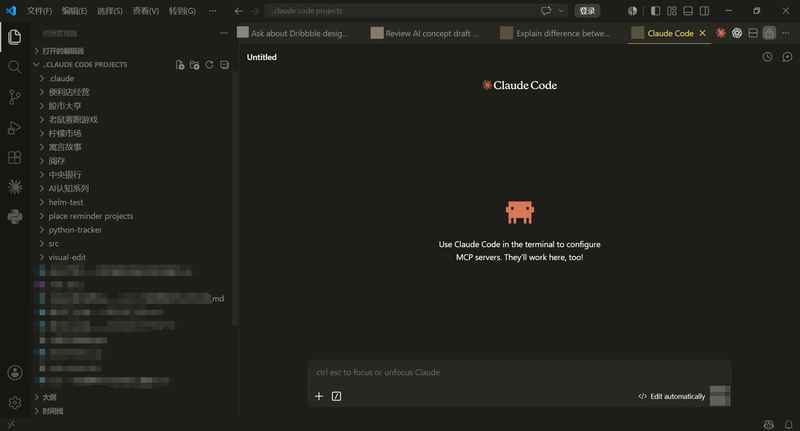
👆 点右上角的 "API 开放平台" 按钮。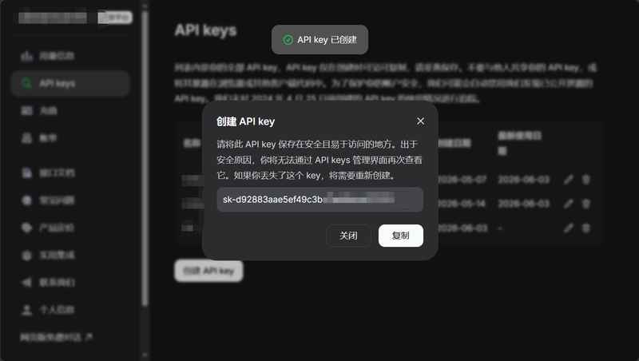
👆 左侧菜单找到 API Keys，点进去。③ 创建 API Key：点 "创建 API Key"，随便起个名字（比如"我的电脑"），点创建。👆 名称随便写，点创建。④ 🚨 关键！马上保存 Key：弹窗里那一长串字母（以 sk- 开头）就是你的钥匙。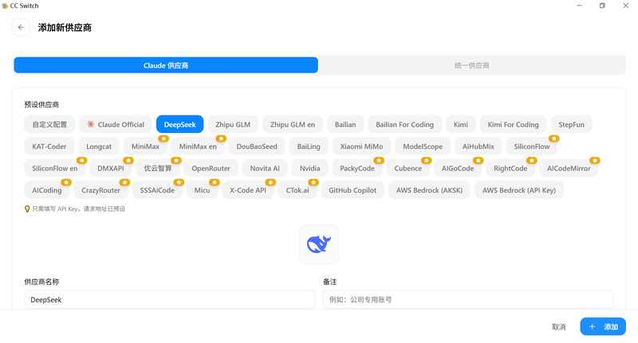
👆 ⚠️ 这个弹窗关掉后就永远看不到完整的 Key 了！🚨 现在就做：用鼠标选中那一长串 → 右键复制 → 打开记事本 → 粘贴 → 保存到桌面，文件名就叫 "DeepSeek钥匙.txt"。
不保存的话，这个 Key 就丢了，只能重新创建一个。✅ 检查点：API Key 已经保存在桌面 "DeepSeek钥匙.txt" 里了吗？是以 sk- 开头的一长串吗？
-
2
安装 ccswitch——装一个"转换插头"
🔌 就像出国用的转换插头
你出国旅游，中国的充电器插不进外国的插座，需要一个转换插头。ccswitch 就是让 Claude Code（外国车）能用 DeepSeek（国产油）的转换器。
打开 PowerShell（还记得怎么打开吗？上一课学过）。输入下面这行，按回车：npm install -g ccswitch别怕这一串字母——它就是在告诉电脑"帮我装一个叫 ccswitch 的小工具"。就像你跟修车师傅说"帮我换个火花塞"，他听得懂。等一两分钟，看到安装完成的提示就行。
✅ 检查点：PowerShell 里显示安装完成了吗？没有红色报错就是成功了。
-
3
配置 ccswitch——把钥匙交给转换器
① 打开 ccswitch：在 PowerShell 里输入ccswitch，按回车。一个设置窗口会弹出来。点 Claude Code 的图标，再点右边的 +（加号）按钮。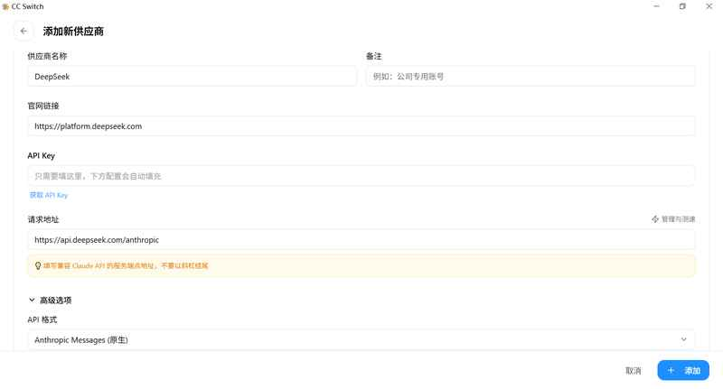
👆 打开 ccswitch，点 Claude Code 图标，再点右侧 + 号。② 选 DeepSeek，填钥匙：在供应商列表里找到并点击 DeepSeek。往下滑，找到 API Key 输入框——打开桌面的 "DeepSeek钥匙.txt"，复制那一串 sk- 开头的东西，粘贴进去。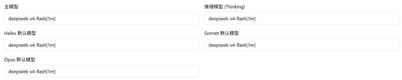
👆 点击 DeepSeek。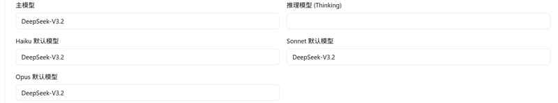
👆 往下滑，把 Key 粘贴到输入框里。请求地址不用改，已经填好了。③ 改模型名，保存：往下滑，找到模型名，把原来的改成deepseek-v4-flash[1m]。然后点 "保存"。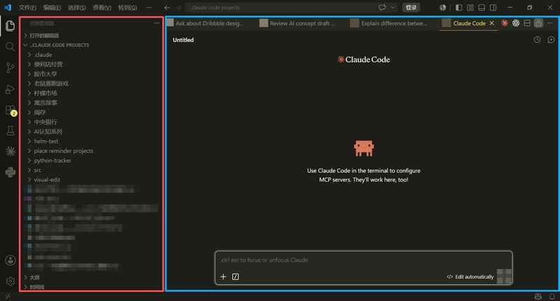
👆 把模型名改成deepseek-v4-flash[1m]。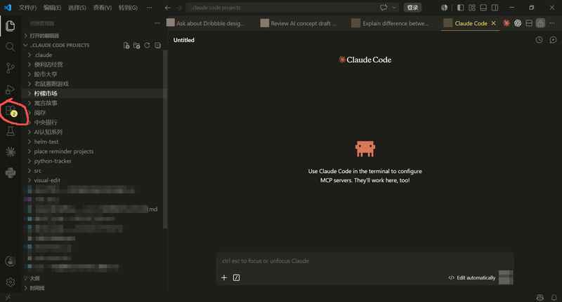
👆 改完以后的样子。点保存。⚠️ 特别注意：模型名后面的 [1m] 一定不能漏！这就像给发动机加了个大油箱——AI 能记住更长的对话。不加的话，AI 说到一半就忘了前面说过什么。✅ 检查点：API Key 填好了吗？模型名改成了 deepseek-v4-flash[1m] 吗？保存了吗？
-
4
启动 Claude Code——发动汽车
打开 PowerShell（新开一个窗口），输入claude，按回车。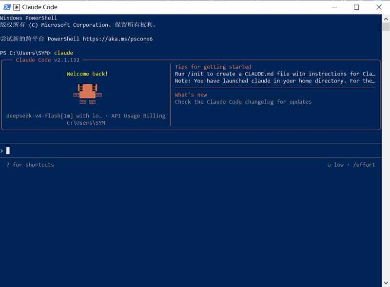
👆 看到这个界面说明 Claude Code 启动了。如果屏幕出现几行英文，问你是否信任——按键盘上的 1，然后按回车。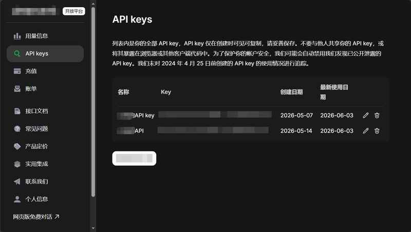
👆 输入 1，按回车。选择信任。✅ 检查点：看到输入光标在闪了吗？可以打字了吗？
-
5
验证——问它一句话，看看发动机对不对
在 Claude Code 里输入：你是什么模型？ 按回车。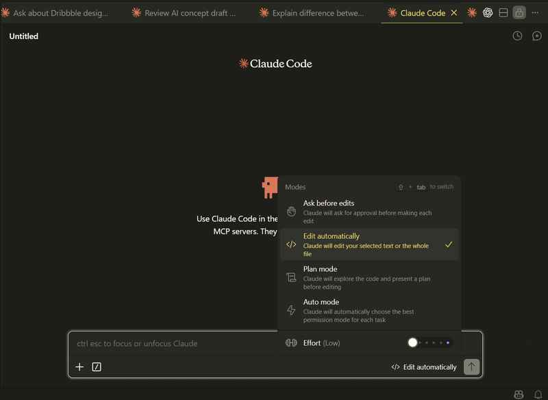
🎉 如果回答里提到了 DeepSeek
恭喜！发动机换成功了！就像换完发动机后发动汽车——听到声音对了，就说明换好了。现在你可以跟 Claude Code 聊天了，让它帮你写东西、算账、整理文件……想让它做什么都行。
💰 如果提示"余额不足"
这是最常见的情况——API Key 里没钱。别慌，很好解决：打开 DeepSeek 官网 → API 开放平台 → 点"充值" → 用微信或支付宝扫码付钱。充 10 块钱够用几个月。跟充话费一样简单。
✅ 检查点：AI 的回答里有 "DeepSeek" 这几个字吗？
💰 关于花钱这件事
还得翻墙
新用户还送免费额度
怎么充值：DeepSeek 官网 → API 开放平台 → 点"充值" → 微信/支付宝扫码。跟充话费一模一样。
花得快吗？不快。老王平时问问题、写文案、算账，10 块钱够用几个月。
会乱扣费吗？不会。用多少扣多少，跟打出租车一样——跑多远付多少钱。不跑不付钱。
③ 再看一遍：完整流程
5 步，约 15 分钟。一次搞定，永久能用。
Claude Code = 🚗 车壳 · DeepSeek = ⛽ 发动机 · ccswitch = 🔌 转换插头 · API Key = 🔑 加油卡
④ 最容易遇到的 4 个问题
90% 是 API Key 没填对。
创建完 Key 后关了弹窗，再也看不到完整 Key 了。
模型名可能没加 [1m]。
deepseek-v4-flash[1m]——后面的 [1m] 不能漏。不加的话 AI "记忆力"差很多。Claude Code 没装好或 PowerShell 需要重新打开。
⑤ 做一遍：5 步练习清单
☐ 2. PowerShell 里输入
npm install -g ccswitch，等待安装完成☐ 3. PowerShell 里输入
ccswitch，选 DeepSeek，填 Key，改模型名，保存☐ 4. PowerShell 里输入
claude，按 1 选信任☐ 5. 输入"你是什么模型？"，看到回答里有 DeepSeek
💡 全部搞定了？太好了！现在试试让它帮你做一件事——比如"帮我写一段朋友圈文案介绍我的五金店"。
⑥ 速查卡
🔧 国内使用 Claude Code 速查卡
| 步骤 | 做什么 | 怎么操作 |
|---|---|---|
| 🔑 | 拿 DeepSeek API Key | chat.deepseek.com → API 开放平台 → API Keys → 创建 → 复制保存 |
| 🔌 | 装 ccswitch | PowerShell 输入 npm install -g ccswitch |
| ⚙️ | 配置 ccswitch | Key: sk-xxx / 地址不改 / 模型: deepseek-v4-flash[1m] |
| 🚗 | 启动 Claude Code | PowerShell 输入 claude，按 1 选信任 |
| ✅ | 验证成功 | 输入"你是什么模型？" → 回答提到 DeepSeek |
| 💰 | 充值（如需） | API 平台 → 充值 → 微信/支付宝（10 块用几个月） |
⑦ 检查一下：你学会了吗？
- 我搞懂了：Claude Code 是车壳，DeepSeek 是发动机，ccswitch 是转换插头
- 我注册了 DeepSeek，创建了 API Key，保存在了桌面记事本里
- 我装好了 ccswitch（npm install -g ccswitch）
- 我配好了 ccswitch：选了 DeepSeek，填了 Key，改了模型名，保存了
- 我启动了 Claude Code，选了信任
- 我验证成功了——问"你是什么模型"回答提到了 DeepSeek
搞定了这一课，你的 Claude Code 就能在国内正常用了！下一步：第一次跟 AI 对话 →